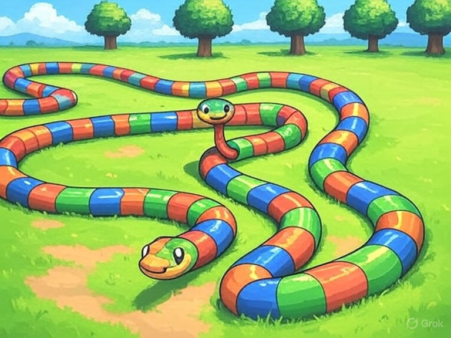
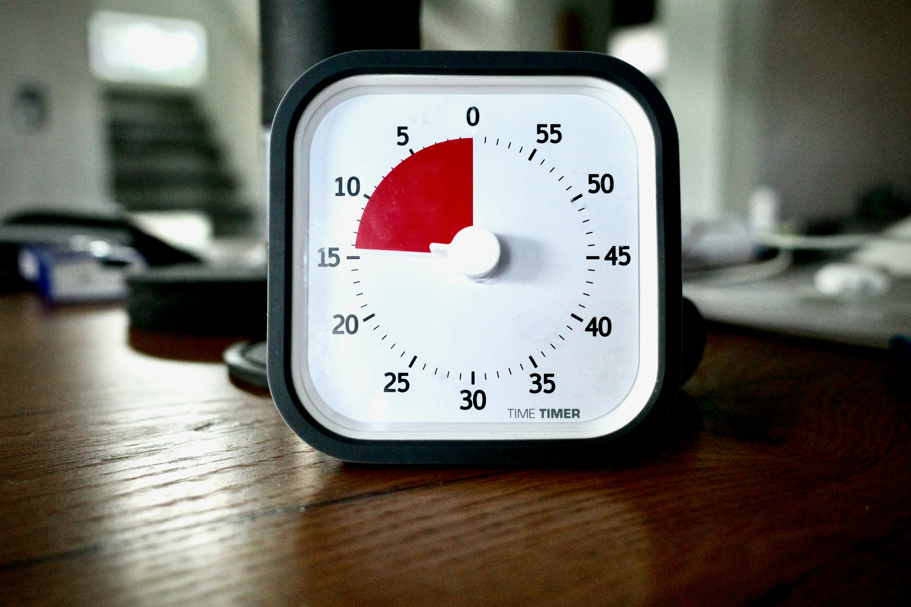
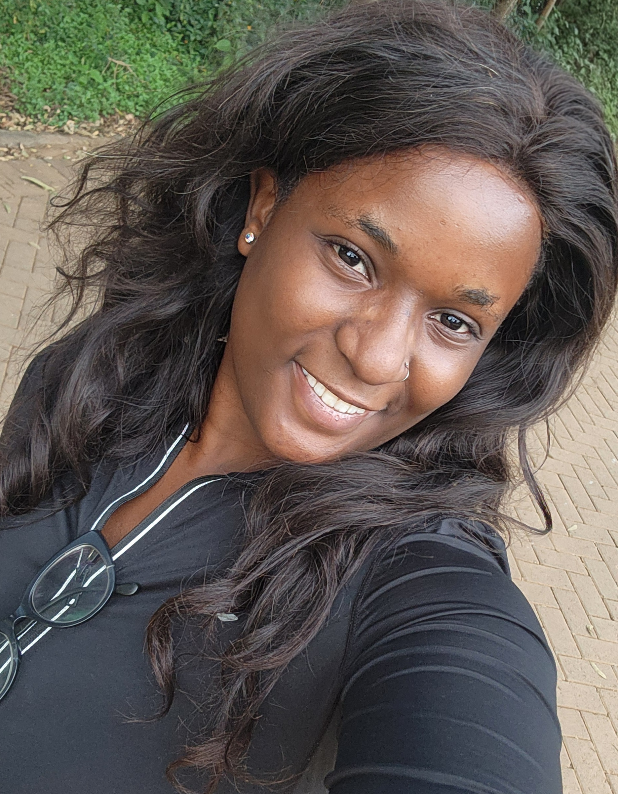

Side
SomaSide
A digital platform dedicated to African storytelling and literature. As Founder and Software Engineer, I designed the product experience and implemented authentication, story uploads, bookmarks and reader profiles.
I’m Jewel, a Nairobi-based full-stack and frontend developer building practical web products—and the CEO and Co-Founder of Taketechs KE.
Platforms, client work and technical experiments spanning African storytelling, Kenyan SMEs, social products and interactive web experiences.
A digital platform dedicated to African storytelling and literature. As Founder and Software Engineer, I designed the product experience and implemented authentication, story uploads, bookmarks and reader profiles.
A Nairobi technology studio building websites, management systems and custom software for Kenyan SMEs. As CEO and Co-Founder, I lead client work, project scoping, operations, timelines and delivery communication.
An African recipe social platform with responsive landing, home, registration and recipe-upload experiences, backed by RESTful API integration.
An e-ticket platform that helps event planners publish events, engage audiences and follow ticket sales. I contributed Vue.js interfaces for landing, posting, search, navigation and library workflows.

Creative web experiments covering Three.js cameras, lighting, materials, GLTF models and animation, alongside an intentionally unconventional React sign-in challenge.

A focused productivity timer built around 25-minute work sessions and short recovery breaks, translating a familiar method into a simple browser experience.

CURIOUSI’m a software engineer working across frontend systems, full-stack applications, product design and interactive web experiences.
My path into technology is grounded in customer service, financial advising, business development and sales. Those experiences taught me to understand users, communicate clearly and connect technical decisions to actual business outcomes.
Today, I build with JavaScript, TypeScript, React, Angular, Vue.js and Three.js. I lead SomaSide as Founder and Software Engineer and Taketechs KE as CEO and Co-Founder, while continuing to develop practical, scalable products.
I focus on the parts of a digital product that shape how people understand, navigate and experience it.
Structured, reusable applications built with React, Angular, Vue.js and TypeScript.
Accessible experiences that remain clear across mobile, tablet and desktop screens.
Connecting interfaces to RESTful services and presenting dynamic information clearly.
Three.js scenes using cameras, lighting, textures, GLTF models and animation.
Moving from Figma and feature planning through implementation and iteration.
Project scoping, client communication, operations and delivery through Taketechs KE.
Engineering experience supported by client service, operations, financial advising and business development.
Lead client work and operations for a Kenyan technology studio: scope projects, set delivery timelines, coordinate communication and help turn SME workflows into websites and custom systems.
Designing and developing an African storytelling platform with authentication, story uploads, bookmarks and reader profiles, while planning its architecture for future growth.
Developed a JavaScript inventory tool that reduced stock reconciliation time by 20%, supported POS operations processing 100+ daily transactions and resolved customer issues in a high-volume environment.
Built client relationships and developed wealth-management and financial-planning recommendations aligned with individual goals.
Supported account research, client acquisition strategy, reporting and collaboration across sales and marketing teams.
Diploma in Software Engineering · 2023–2024
Front-End Web Development Certification · 2025
Responsive Web Design · JavaScript Algorithms · Front-End Libraries · Back-End Development & APIs
Diploma in Insurance · 2018–2022
Certificate in Culinary Arts and Pastry · 2017